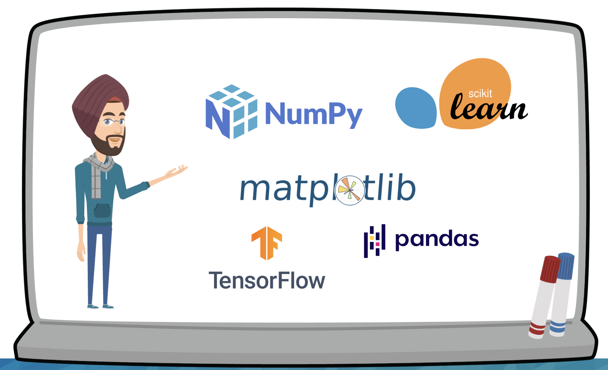

1 Introdução
Começar no mundo de Machine Learning e Inteligência Artificial pode parecer intimidante no início. Com tantos conceitos, linguagens e ferramentas disponíveis, é natural se perguntar: “Por onde começar?”. Este guia apresenta os pré-requisitos essenciais organizados de forma clara e prática, desde o básico até o avançado.
Não se preocupe se você não domina todos estes tópicos ainda. Machine Learning é uma jornada, e você pode ir aprendendo conforme avança. O importante é ter uma visão geral do que será necessário e criar um plano de estudos adequado ao seu perfil.
2 Fundamentos Matemáticos
2.1 Álgebra Linear
A álgebra linear é o coração do Machine Learning. Praticamente todos os algoritmos trabalham com vetores, matrizes e operações lineares.
Conceitos essenciais:
- Vetores e operações vetoriais (soma, multiplicação escalar, produto escalar)
- Matrizes e operações matriciais (multiplicação, transposição, inversão)
- Sistemas de equações lineares
- Autovalores e autovetores
- Decomposição de matrizes (SVD, PCA)
Por que é importante: Redes neurais são essencialmente operações matriciais em cascata. Algoritmos como PCA usam decomposição de matrizes. Entender esses conceitos ajuda a otimizar modelos e debugar problemas.
2.2 Cálculo
O cálculo é fundamental para entender como os algoritmos de ML “aprendem” através da otimização.
Conceitos essenciais:
- Derivadas e derivadas parciais
- Gradientes e direções de crescimento
- Otimização de funções (máximos e mínimos)
- Regra da cadeia (crucial para backpropagation)
- Integrais básicas
Por que é importante: O gradient descent, base de muitos algoritmos de ML, é puro cálculo. Entender derivadas ajuda a compreender como os modelos ajustam seus parâmetros.
2.3 Estatística e Probabilidade
A estatística fornece as ferramentas para entender dados e fazer inferências.
Conceitos essenciais:
- Distribuições de probabilidade (normal, binomial, Poisson)
- Teorema de Bayes
- Teste de hipóteses
- Intervalos de confiança
- Correlação vs causalidade
- Amostragem e viés amostral
Por que é importante: ML lida com incerteza. Entender probabilidade ajuda na interpretação de resultados, avaliação de modelos e tomada de decisões baseadas em dados.
3 Python: A Linguagem do ML
3.1 Python Básico
Antes de mergulhar nas bibliotecas específicas, você precisa dominar o Python.
Fundamentos necessários:
- Sintaxe básica (variáveis, tipos de dados, operadores)
- Estruturas de controle (if/else, loops)
- Funções e classes
- Manipulação de strings e listas
- Tratamento de exceções
- Comprehensions (list, dict)
# Exemplo de comprehension útil em ML
squared_numbers = [x**2 for x in range(10)]
filtered_data = [item for item in dataset if item > threshold]3.2 Bibliotecas Essenciais
Pandas
Pandas é a biblioteca para análise e manipulação de dados em Python. É praticamente impossível fazer ML sem ela.
Funcionalidades principais:
- Leitura de dados (CSV, Excel, JSON, bancos de dados)
- DataFrames e Series para estruturar dados
- Limpeza de dados (valores faltantes, duplicatas)
- Transformações e agregações
- Operações de merge e join
import pandas as pd
# Carregar dados
df = pd.read_csv('dados.csv')
# Exploração inicial
df.head()
df.info()
df.describe()
# Limpeza
df.dropna() # Remove valores faltantes
df.fillna(df.mean()) # Preenche com médiaPor que é essencial: 80% do trabalho em ML é preparação de dados. Pandas torna isso possível e eficiente.
NumPy
NumPy é a base matemática do ecossistema Python para ciência de dados.
Funcionalidades principais:
- Arrays N-dimensionais eficientes
- Operações matemáticas vetorizadas
- Broadcasting (operações entre arrays de diferentes tamanhos)
- Funções matemáticas avançadas
- Integração com outras bibliotecas
import numpy as np
# Criação de arrays
arr = np.array([1, 2, 3, 4, 5])
matrix = np.array([[1, 2], [3, 4]])
# Operações vetorizadas (muito mais rápidas que loops Python)
result = arr * 2
dot_product = np.dot(matrix, vector)Por que é essencial: Performance. Operações NumPy são até 100x mais rápidas que Python puro. Todas as bibliotecas de ML usam NumPy internamente.
Matplotlib
Visualização de dados é crucial para entender padrões e comunicar resultados.
Funcionalidades principais:
- Gráficos básicos (linha, barra, scatter, histograma)
- Customização completa (cores, estilos, anotações)
- Subplots para múltiplas visualizações
- Integração com Pandas
import matplotlib.pyplot as plt
# Gráfico simples
plt.plot(x, y)
plt.xlabel('Variável X')
plt.ylabel('Variável Y')
plt.title('Meu Gráfico')
plt.show()
# Histograma para entender distribuições
plt.hist(data, bins=30)
plt.show()Por que é essencial: Dados sem visualização são apenas números. Gráficos revelam padrões, outliers e insights que números sozinhos não mostram.
4 Ferramentas e Bibliotecas de ML
4.1 Scikit-learn
A biblioteca mais popular para ML tradicional em Python.
Funcionalidades:
- Algoritmos de classificação, regressão e clustering
- Pré-processamento de dados (normalização, encoding)
- Validação cruzada e métricas de avaliação
- Pipelines para automatizar workflows
from sklearn.model_selection import train_test_split
from sklearn.linear_model import LinearRegression
from sklearn.metrics import mean_squared_error
# Divisão dos dados
X_train, X_test, y_train, y_test = train_test_split(X, y, test_size=0.2)
# Treinamento
model = LinearRegression()
model.fit(X_train, y_train)
# Avaliação
predictions = model.predict(X_test)
mse = mean_squared_error(y_test, predictions)4.2 TensorFlow/Keras ou PyTorch
Para Deep Learning, você precisará de uma dessas frameworks.
TensorFlow/Keras - Mais beginner-friendly:
import tensorflow as tf
from tensorflow.keras import layers
model = tf.keras.Sequential([
layers.Dense(64, activation='relu'),
layers.Dense(10, activation='softmax')
])PyTorch - Mais flexível para pesquisa:
import torch
import torch.nn as nn
class SimpleNet(nn.Module):
def __init__(self):
super().__init__()
self.fc1 = nn.Linear(784, 64)
self.fc2 = nn.Linear(64, 10)4.3 Jupyter Notebook
Ambiente interativo essencial para experimentação e prototipagem.
Vantagens:
- Execução célula por célula
- Visualizações inline
- Documentação com Markdown
- Fácil compartilhamento
- Integração com Git
5 Habilidades Não-Técnicas Importantes
5.1 Inglês
Embora não seja obrigatório, o inglês é extremamente útil no mundo do ML.
Por que é importante:
- Documentação técnica está majoritariamente em inglês
- Artigos de pesquisa são publicados em inglês
- Comunidades online (Stack Overflow, Reddit, Discord) são predominantemente em inglês
- Cursos e tutoriais de qualidade estão frequentemente em inglês
- Conferências e palestras importantes são em inglês
Dica prática: Comece lendo documentação em inglês. É uma forma natural de melhorar o vocabulário técnico.
5.2 Pensamento Analítico
ML não é apenas sobre código - é sobre resolver problemas.
Habilidades importantes:
- Formulação de problemas (transformar problemas de negócio em problemas de ML)
- Interpretação de resultados
- Pensamento crítico sobre dados e modelos
- Capacidade de fazer perguntas certas aos dados
5.3 Curiosidade e Paciência
O ML é um campo em constante evolução que exige aprendizado contínuo.
Características importantes:
- Disposição para experimentar e falhar
- Paciência para debuggar modelos que não funcionam
- Curiosidade para entender o “porquê” por trás dos resultados
- Humildade para reconhecer limitações dos modelos
6 Recursos Recomendados
6.1 Livros
6.2 Cursos Online
- Fast.ai - Prático e direto ao ponto
- Coursera ML Course - Andrew Ng (clássico)
- Kaggle Learn - Módulos gratuitos e práticos
6.3 Plataformas de Prática
- Kaggle - Competições e datasets
- Google Colab - Jupyter gratuito na nuvem
- GitHub - Versionamento e portfolio
7 Erros Comuns a Evitar
7.1 Tentar Aprender Tudo ao Mesmo Tempo
ML é vasto. Foque em um tópico por vez e pratique bastante antes de avançar.
7.2 Pular a Teoria
Entender o “porquê” é tão importante quanto o “como”. Não seja apenas um desenvolvesor “copia e cola” .
7.3 Não Praticar Suficiente
Leia menos, codifique mais. A prática é fundamental para consolidar o conhecimento.
7.4 Ignorar a Qualidade dos Dados
“Garbage in, garbage out (lixo entra, lixo sai)”. Gaste tempo entendendo e limpando seus dados.
8 Conclusão
Machine Learning é uma jornada emocionante, mas exige dedicação e estudo consistente. Não se intimide com a quantidade de pré-requisitos - todos os experts começaram do zero um dia.
O mais importante é começar. Escolha um tópico, estude, pratique e vá avançando gradualmente. Com o tempo e prática, você dominará essas ferramentas e conceitos.
Lembre-se: o objetivo não é ser perfeito em tudo antes de começar, mas sim ter uma base sólida para continuar aprendendo. Machine Learning é um campo em constante evolução, e mesmo os experts estão sempre aprendendo coisas novas.
Comece hoje, seja paciente consigo mesmo e aproveite a jornada. O futuro do ML está nas suas mãos!
Quer saber mais sobre Machine Learning? Confira outros posts do blog e acompanhe as novidades do mundo da IA!